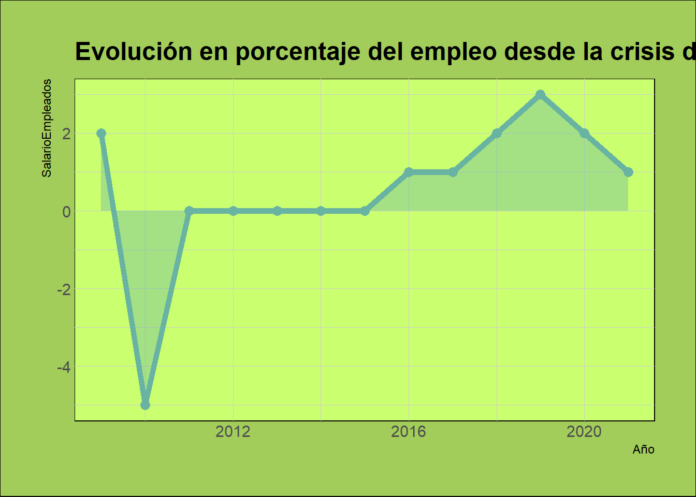

El objetivo es un estudio de los argumentos a favor de la existencia del salario mínimo en un país.
trabajo BigData
SalarioMinimo
Autor/a
Alegria Pintado (apinbar@uv.es)
Fecha de publicación
1 de enero de 2023
1. INTRODUCCION
1.1 ¿QUÉ ES EL SALARIO MÍNIMO?
El salario mínimo se ha definido como “la cuantía mínima de la remuneración que un empleador deberá abonar a sus asalariados por las prestaciones que éstos hayan efectuado durante un determinado período, sin que dicha cuantía pueda ser rebajada mediante convenio colectivo ni acuerdo individual”. Los salarios mínimos pueden establecerse por ley, una decisión de una autoridad competente o una opinión de los tribunales laborales. El propósito de los salarios mínimos es proteger a los trabajadores de pagar salarios indebidamente bajos. Los salarios mínimos también pueden ser un elemento integral de las políticas destinadas a superar la pobreza y reducir la desigualdad, promoviendo el derecho a la igualdad de remuneración por trabajo de igual valor. Es necesario distinguir del mecanismo de salario mínimo, que define un nivel de salario mínimo, los procedimientos de negociación colectiva, que pueden utilizarse para fijar salarios por encima de un nivel mínimo existente.
1.2 ¿CUÁNTOS PAÍSES TIENEN SALARIO MÍNIMO?
El 90% de los Estados Miembros de la OIT tienen uno o más salarios mínimos fijados por ley o convenios colectivos vinculantes. Todos los países europeos tienen un salario mínimo que se aplica al menos a una parte del sector privado. En América y el Caribe hay muy pocas excepciones, como Surinam. También hay algunas excepciones en Asia, como Singapur y Brunei, y en África, como Etiopía, Eritrea y Somalia. En cuanto a los países árabes, no tienen un sistema de salario mínimo Qatar, Bahrein y los Emiratos Árabes Unidos.
El salario es la compensación que un empleador otorga a sus trabajadores, ya sean trabajadores regulares o de corta plazo, intermitentes o de temporada, y también a los aprendices. Sin embargo, su definición no incluye los ingresos del trabajo por cuenta propia. En muchos casos, el salario total se divide en componentes como los siguientes: remuneración básica, bonificaciones anuales, primas de productividad y rendimiento, subsidios y primas por trabajo fuera de horario o trabajo peligroso. Sin embargo, debe entenderse si el salario mínimo debe aplicarse al salario total de los trabajadores o solo a algunos de sus componentes.
2. EFECTOS DEL SALARIO MÍNIMO
2.1 EFECTOS EN LOS SALRIOS
Para que el salario mínimo sea eficaz hay que verificar si la aplicación de este lleva a un aumento de salarios en general. Si es eficaz empujará al alza los salarios promedio y reducirá la desigualdad salarial.
Si los salarios bajos de los trabajadores aumentan, se puede decir que el salario mínimo ayuda a aquellos trabajadores más vulnerables como son los jóvenes, las personas con menos formación o los migrantes.
En la práctica los salarios mínimos benefician a dos categorías de trabajadores:
Aquellos que antes ganaban menos que el salario mínimo.
Aquellos que ganan más que el salario mínimo. La aplicación de un mínimo puede tener un efecto "derrame" hacia los niveles superiores de salarios, esto quiere decir que los trabajadores o empleadores o ambos quieren que se paguen salarios más altos a los trabajadores que tienen más antigüedad o que están más calificados. Los efectos de derrame ocurren cuando, como consecuencia de la aplicación de un salario mínimo más alto, los trabajadores con más antigüedad o profesionalmente más capacitados también exigen salarios más altos, ya sea en el marco de la negociación colectiva o individual.
En las economías desarrolladas aquellos que tienen sueldos menores son los restaurantes, hoteles, tiendas minoristas, hogares de ancianos, peluquerías, explotaciones agrícolas e industrias textiles, de la confección y del procesamiento de alimentos. En los países en vía de desarrollo los que obtienen salarios mínimos son aquellos que trabajan en la agricultura, la industria textil, de la confección y el cuero o calzado.
En la mayoría de los estudios empíricos observamos que en muchas economías avanzadas existe un efecto de reducción de la desigualdad. Belman y Wolfson en el análisis que hicieron a Estados Unidos y otras economías avanzadas, demostraron que el aumento del salario mínimo repercute en un aumento del nivel salarial de las personas que antes ganaban menos del mínimo y también de las que habían estado ganando algo más que el nuevo mínimo.
En Estados Unidos el 5% de los trabajadores no gana más que el nivel mínimo fijado, pero se estima que hasta el 25% de los trabajadores se han beneficiado indirectamente de la aplicación de la política del salario mínimo. En Francia el 11% de los trabajadores aumentaron su salario con el incremento del salario mínimo aplicado en 2015.
También se demuestra que en economías en desarrollo una aplicación de salario mínimo reduce la desigualdad salarial, por ejemplo, en Brasil. Sin embargo, el problema que se encuentra en estos países es el incumplimiento generalizado.
Por lo que, el efecto del salario mínimo es diferente según el país y depende también de otros factores como el nivel en que se fije el salario, del número de trabajadores a los que se aplique, de la magnitud del derrame y del grado de cumplimiento.
2.2 EFECTOS EN EL EMPLEO
Los efectos que tiene el salario mínimo sobre el empleo son esenciales. Lo que nos interesa saber es cómo los salarios mínimos inciden en los puestos de trabajo, el número de asalariados y el número de horas trabajadas.
Belman y Wolfson creen que los argumentos a favor del salario mínimo se tienen que apoyar en las mejoras que aporta a la vida de los grupos más vulnerables en el mercado laboral. Estos políticos, expertos y activistas afirman que no hay efectos negativos de los aumentos sustanciales del salario mínimo en el empleo. Constantemente, citan esta nueva literatura como evidencia de que el punto de vista “tradicional” está equivocado. Esto se debe a que malinterpretan la nueva literatura. Lo que la nueva literatura encuentra es que no podría haber efectos negativos significativos sobre el empleo. Esto no es lo mismo que decir que no hay efectos negativos en general.
Los principios de la macroeconomía keynesiana sugieren que el volumen de empleo puede aumentar cuando los salarios mínimos conducen a un incremento del consumo interno y de la demanda agregada. Por otro lado, muchos empleadores tienen poder de monopsonio, es decir, son los únicos compradores de un tipo particular de servicio laboral, por ejemplo, los que contratan a dependientes de comercio minorista o a auxiliares de enfermería y en consecuencia tienen capacidad para mantener los salarios, es decir, mantienen el precio del trabajo en un nivel por debajo del valor de su contribución a la productividad. Esto nos lleva a que cuando hay un aumento en los costes laborales pueden tener incentivo para maximizar sus ganancias mediante la expansión de la producción y del empleo, el efecto monopsonio. Podemos ver que la existencia de salarios más altos no sólo eleva los costos laborales para los empleadores, sino que también aumenta la demanda de consumo entre los trabajadores con salarios bajos y sus familias.
GRÁFICO EMPLEO
Código
library(readxl)Empleo <-read_excel("datos graficos/Empleo.xlsx")View(Empleo)evolucion_Empleo <-ggplot(Empleo, aes(x=Año, y=SalarioEmpleados)) +geom_area( fill="#69b3a2", alpha=0.4) +geom_line(color="#69b3a2", size=2) +geom_point(size=3, color="#69b3a2") +theme_ipsum() +ggtitle("Evolución en porcentaje del empleo desde la crisis de 2008") +theme(plot.subtitle =element_text(family ="sans"),plot.caption =element_text(family ="sans"),axis.title =element_text(family ="sans"),plot.title =element_text(family ="sans"),panel.background =element_rect(fill ="darkolivegreen1"),plot.background =element_rect(fill ="#A2CD5A"))evolucion_Empleo

2.3 EFECTOS EN LA PRODUCTIVIDAD LABORAL
La productividad laboral es un indicador económico que está relacionado con el crecimiento económico, la competitividad y el nivel de vida. Representa el volumen total de output producido por unidad de trabajo durante un periodo determinado de tiempo, es decir, nos permite tener información sobre la calidad del capital humano en el proceso de producción y la eficiencia para un contexto económico y social determinado. A nivel macroeconómico se mide:
Productividad laboral = PIB/(Número de personas ocupadas)
Recientemente se ha demostrado que los salarios mínimos no sólo ayudan a reducir la dispersión salarial y a canalizar las ganancias de productividad hacia la fijación de salarios más altos, sino que también pueden contribuir a lograr una mayor productividad del trabajo, tanto a nivel de la empresa como a nivel del conjunto de la economía.
A nivel de empresa, la teoría de los “salarios de eficiencia” respalda que los trabajadores pueden motivarse para trabajar con más intensidad, es decir, a niveles de esfuerzo más elevados si ven salarios más altos. Según esta teoría, son los empresarios los que empujan al alza los salarios.
Las empresas no desean reducir el salario que pagan a sus trabajadores porque esto implica un descenso de la productividad que conlleva un coste superior al ahorro generado por el recorte salarial. Aparece así el fenómeno del desempleo involuntario ya que los trabajadores desempleados no son capaces de encontrar un trabajo, aunque estén dispuestos a aceptar un salario menor al del mercado.
Este desempleo (exceso de oferta) persiste en equilibrio porque las empresas no los contratan a estos salarios pues entonces no tendrían incentivos a esforzarse. El desempleo involuntario que persiste en este mercado actúa como mecanismo disciplinador de la fuerza de trabajo. Si en el mercado la oferta fuera igual a la demanda (sólo habría desempleo voluntario) y los trabajadores con empleo no obtendrían rentas económicas, la amenaza de despido o de no renovación del contrato sería una amenaza vacía.
El esfuerzo y la productividad aumentan con el salario. Tres razones:
Los trabajadores trabajan más duro para evitar perder estos puestos de trabajo bien remunerados.
Se reduce la rotación en el empleo que es costosa para el empleador. Así mismo, atrae a trabajadores motivados.
Los salarios altos motivan psicológicamente al trabajador, activando su reciprocidad positiva: "Intercambio de regalos".
En 1914, Henry Ford, aumentó el salario mínimo diario de los empleados de Ford Motor Company (una de las más importantes grandes empresas en EEUU en el siglo XX) de 2,34 a 5 dólares. ¿Por qué un empresario maximizador de beneficios aumenta el pago de sus empleados por encima del nivel competitivo de mercado? Henry Ford (1914): “The payment of five dollars a day for an eight-hour day was one of the finest cost-cutting moves we ever made”.
En varios estudios se ha señalado que los aumentos de productividad pueden ser el resultado de una disminución del empleo como consecuencia de la aplicación de un salario mínimo. Aunque esto pueda ser cierto, sobre todo cuando el salario mínimo es demasiado alto, otras investigaciones han mostrado que los aumentos de productividad en las empresas se lograron gracias a la introducción de cambios en la organización, a las actividades de formación y al pago de retribuciones salariales por los aumentos de eficiencia con que se compensa el mayor costo laboral resultante de la aplicación de los salarios mínimos. Diversos estudios respaldan que el implantar el salario mínimo no reduce la productividad, sino que permite una menor rotación y una mayor motivación.
Utilizando en forma experimental un diseño natural normalizado, Georgiadis (2013), por ejemplo, reveló que el salario mínimo nacional del Reino Unido funcionó como una especie de “salario de eficiencia” en el sector de las residencias geriátricas, incrementando la motivación de su personal y reduciendo las necesidades de supervisión de dicho personal. Los datos fácticos recopilados en los Estados Unidos por Owens y Kagel (2010) también ponen de relieve la existencia de una correlación positiva entre el salario mínimo y el nivel de esfuerzo de los trabajadores, lo que permite concluir que, cuando están bien diseñados, los salarios mínimos pueden generar mejoras de rendimiento del personal en las empresas y sectores en que se practican salarios más altos y los costos laborales se mantienen en un mismo nivel o se incrementan moderadamente.
Dube, Lester y Reich (2012) revelaron que en los Estados Unidos un aumento del 10% del salario mínimo redunda en una reducción del 2,1% de la rotación de los trabajadores del sector de la restauración y una reducción del 2% de la rotación de los trabajadores adolescentes. A su juicio, ello obedece a la reducción de la competencia salarial entre las empresas que pagan las remuneraciones más bajas. En Canadá, Brochu y Green (2011) mostraron que la contratación, las partidas y los despidos de los trabajadores jóvenes con un bajo nivel de educación habían disminuido en el año posterior al aumento del salario mínimo. En Portugal, un estudio ha documentado la forma en que el número de partidas de trabajadores jóvenes disminuyó considerablemente después de la aplicación de un aumento del salario mínimo destinada específicamente a los jóvenes (Portugal y Cardoso, 2006). Los salarios de eficiencia y las actividades de formación en respuesta al aumento de los gastos de personal han sido estudiados por Arulampalam y otros (2004), que encontraron indicios de que la introducción del salario mínimo nacional en Gran Bretaña había entrañado un aumento de la formación para los empleadores.
A nivel agregado, la aplicación de los salarios mínimos puede llevar a que las empresas más productivas reemplacen a las menos productivas, y a que las empresas sobrevivientes sean más eficientes. Estos mecanismos pueden aumentar la productividad general de toda la economía.
En China, por ejemplo, se ha observado que el aumento de los salarios mínimos en las ciudades se tradujo en una menor probabilidad de supervivencia de las empresas con baja productividad. Dicho esto, no hubo efectos negativos en el empleo, ya que tanto éste como la productividad aumentaron en las empresas que sobrevivieron. En otras palabras, el salario mínimo sirvió quizás para que las empresas más productivas reemplazaran a las menos productivas, y obligó a las empresas ya establecidas a potenciar su competitividad.
3. SALARIO MÍNIMO EN ESPAÑA
En España existe un mercado de trabajo muy sensible a los ciclos económicos por lo que ante una crisis económica el ajuste de la economía española suele conllevar a una fuerte destrucción de empleo. Además, debido a las reformas laborales el mercado de trabajo español se caracteriza por su inestabilidad. Cabe destacar que tenemos un escaso efecto redistributivo del sistema impositivo y del gasto público social del Estado del bienestar. Es por esto por lo que en España ha crecido la desigualdad de renta y cada vez hay más población en riesgo de pobreza y de exclusión social.
El principal beneficiario del SMI en España es un asalariado más probablemente mujer, joven y de nivel educativo bajo, trabajando en una empresa pequeña, mayormente en el sector servicios y en ocupaciones poco cualificadas. Estas características coinciden con las de las personas asociadas a una mayor precariedad en el mercado de trabajo. Son las que reciben los salarios más bajos y son también las que tienen más probabilidades de perder su empleo durante las crisis económicas. Además, los datos muestran que tienen más posibilidades de vivir con dificultades financieras. Estas múltiples situaciones de vulnerabilidad subrayan la importancia de la intervención pública implantando políticas que protejan a estos trabajadores y a sus familias, especialmente durante las crisis.
Desde un punto de vista sociopolítico, la introducción y el aumento a lo largo de los años del salario mínimo ha traído muchas ventajas. Mejora la economía en general porque aumenta el estilo de vida de los trabajadores y sus familias, que están dispuestos a consumir más. Reduce las desigualdades sociales entre ciudadanos españoles y con países miembros de la Unión Europea. Permite a los trabajadores mantener su poder adquisitivo en un contexto de inflación. Los trabajadores están más motivados para hacer un mejor trabajo.
El principal argumento en contra del salario mínimo es la destrucción de empleo, pero según un informe de CCOO basado en datos del 2019, se analiza que la subida del salario mínimo no incrementa la probabilidad de perder empleo ni disminuye la probabilidad de encontrar uno nuevo.
En primer lugar, este análisis muestra que la probabilidad de mantener el empleo de los asalariados con estudios primarios o inferiores no sufrió modificaciones destacables en 2019 con respecto a la media de los cuatro años anteriores; siendo un colectivo de alta incidencia del SMI (14,4%).
En segundo lugar, la probabilidad de encontrar empleo del colectivo de parados con estudios primarios o inferiores incrementó en 2019 con respecto a la media de los cuatro años anteriores, de tal manera que tampoco se aprecia una influencia negativa de la subida del SMI.
A la vista de estos resultados no parece que el importante incremento del SMI en 2019 afectará de manera negativa a la probabilidad de mantener ocupado o de encontrar un empleo en aquellos colectivos más afectados por la subida. Además, la subida del salario mínimo ha beneficiado a más de un millón de personas asalariadas mejorando las condiciones de trabajo y la cohesión social del país. Los principales beneficiarios han sido los grupos afectados por la precariedad laboral, en particular jóvenes y mujeres.
Organización Internacional del Trabajo. (s. f.). Guía sobre políticas en materia de salario mínimo.: Capítulo 1 - ¿Cómo se define un salario mínimo?
Organización Internacional del Trabajo. (s. f.). Guía sobre políticas en materia de salario mínimo.: Capítulo 3 - ¿Quién debería fijar los salarios mínimos?
Organización Internacional del Trabajo. (s. f.). Guía sobre políticas en materia de salario mínimo.: Capítulo 5 - Fijación y ajuste de los niveles de salario mínimo.
Organización Internacional del Trabajo. (s. f.). Guía sobre políticas en materia de salario mínimo.: Capítulo 6 - ¿Cómo hacer cumplir el salario mínimo?
Organización Internacional del Trabajo. (s. f.). Guía sobre políticas en materia de salario mínimo.: Capítulo 7 - Seguimiento de los efectos de los salarios mínimos.
Ejecutar el código
---title: "Argumentos que defienden la existencia del salario mínimo"description: | El objetivo es un estudio de los argumentos a favor de la existencia del salario mínimo en un país.author: Alegria Pintado (apinbar@uv.es) #--date: 2023-01-01 #--categories: [trabajo BigData, SalarioMinimo] #--image: "alegria.jpg"title-block-banner: true #- {true, false, "green","#AA0000"}title-block-banner-color: "red" #-"#FFFFFF" toc: truetoc-location: lefttoc-depth: 3smooth-scroll: trueformat: html: #backgroundcolor: "#F1F3F4" #standalone: true link-external-newwindow: true #css: ./assets/my_css_file.css #- CUIDADO!!!!code-tools: truecode-link: trueeditor: markdown: wrap: sentence---# 1. INTRODUCCION## 1.1 ¿QUÉ ES EL SALARIO MÍNIMO?El salario mínimo se ha definido como "la cuantía mínima de la remuneración que un empleador deberá abonar a sus asalariados por las prestaciones que éstos hayan efectuado durante un determinado período, sin que dicha cuantía pueda ser rebajada mediante convenio colectivo ni acuerdo individual". Los salarios mínimos pueden establecerse por ley, una decisión de una autoridad competente o una opinión de los tribunales laborales. El propósito de los salarios mínimos es proteger a los trabajadores de pagar salarios indebidamente bajos. Los salarios mínimos también pueden ser un elemento integral de las políticas destinadas a superar la pobreza y reducir la desigualdad, promoviendo el derecho a la igualdad de remuneración por trabajo de igual valor. Es necesario distinguir del mecanismo de salario mínimo, que define un nivel de salario mínimo, los procedimientos de negociación colectiva, que pueden utilizarse para fijar salarios por encima de un nivel mínimo existente.## 1.2 ¿CUÁNTOS PAÍSES TIENEN SALARIO MÍNIMO? El 90% de los Estados Miembros de la OIT tienen uno o más salarios mínimos fijados por ley o convenios colectivos vinculantes. Todos los países europeos tienen un salario mínimo que se aplica al menos a una parte del sector privado. En América y el Caribe hay muy pocas excepciones, como Surinam. También hay algunas excepciones en Asia, como Singapur y Brunei, y en África, como Etiopía, Eritrea y Somalia. En cuanto a los países árabes, no tienen un sistema de salario mínimo Qatar, Bahrein y los Emiratos Árabes Unidos.GRÁFICO PAÍSES```{r}library(tidyverse)library(readxl)library(ggplot2)library(dplyr)library(plotly)library(hrbrthemes)Paises <-read_excel("datos graficos/Paises.xlsx")View(Paises)grafico_paises <-ggplot(Paises, aes(x=SalarioMinimo, y=Paises)) +geom_bar(stat ="identity") +ggtitle("Paises que disponen de salario minimo") +theme(plot.subtitle =element_text(family ="sans"),plot.caption =element_text(family ="sans"),axis.title =element_text(family ="sans"),plot.title =element_text(family ="sans"),panel.background =element_rect(fill ="#FFEFDB"),plot.background =element_rect(fill ="#7FFFD4"))grafico_paises```## **1.3 ¿QUÉ ASPECTOS ABARCA EL SALARIO MÍNIMO?**El salario es la compensación que un empleador otorga a sus trabajadores, ya sean trabajadores regulares o de corta plazo, intermitentes o de temporada, y también a los aprendices. Sin embargo, su definición no incluye los ingresos del trabajo por cuenta propia. En muchos casos, el salario total se divide en componentes como los siguientes: remuneración básica, bonificaciones anuales, primas de productividad y rendimiento, subsidios y primas por trabajo fuera de horario o trabajo peligroso. Sin embargo, debe entenderse si el salario mínimo debe aplicarse al salario total de los trabajadores o solo a algunos de sus componentes.# 2. EFECTOS DEL SALARIO MÍNIMO## 2.1 EFECTOS EN LOS SALRIOSPara que el salario mínimo sea eficaz hay que verificar si la aplicación de este lleva a un aumento de salarios en general. Si es eficaz empujará al alza los salarios promedio y reducirá la desigualdad salarial.Si los salarios bajos de los trabajadores aumentan, se puede decir que el salario mínimo ayuda a aquellos trabajadores más vulnerables como son los jóvenes, las personas con menos formación o los migrantes.En la práctica los salarios mínimos benefician a dos categorías de trabajadores: Aquellos que antes ganaban menos que el salario mínimo. Aquellos que ganan más que el salario mínimo. La aplicación de un mínimo puede tener un efecto "derrame" hacia los niveles superiores de salarios, esto quiere decir que los trabajadores o empleadores o ambos quieren que se paguen salarios más altos a los trabajadores que tienen más antigüedad o que están más calificados. Los efectos de derrame ocurren cuando, como consecuencia de la aplicación de un salario mínimo más alto, los trabajadores con más antigüedad o profesionalmente más capacitados también exigen salarios más altos, ya sea en el marco de la negociación colectiva o individual.En las economías desarrolladas aquellos que tienen sueldos menores son los restaurantes, hoteles, tiendas minoristas, hogares de ancianos, peluquerías, explotaciones agrícolas e industrias textiles, de la confección y del procesamiento de alimentos. En los países en vía de desarrollo los que obtienen salarios mínimos son aquellos que trabajan en la agricultura, la industria textil, de la confección y el cuero o calzado.En la mayoría de los estudios empíricos observamos que en muchas economías avanzadas existe un efecto de reducción de la desigualdad. Belman y Wolfson en el análisis que hicieron a Estados Unidos y otras economías avanzadas, demostraron que el aumento del salario mínimo repercute en un aumento del nivel salarial de las personas que antes ganaban menos del mínimo y también de las que habían estado ganando algo más que el nuevo mínimo.En Estados Unidos el 5% de los trabajadores no gana más que el nivel mínimo fijado, pero se estima que hasta el 25% de los trabajadores se han beneficiado indirectamente de la aplicación de la política del salario mínimo. En Francia el 11% de los trabajadores aumentaron su salario con el incremento del salario mínimo aplicado en 2015.También se demuestra que en economías en desarrollo una aplicación de salario mínimo reduce la desigualdad salarial, por ejemplo, en Brasil. Sin embargo, el problema que se encuentra en estos países es el incumplimiento generalizado.Por lo que, el efecto del salario mínimo es diferente según el país y depende también de otros factores como el nivel en que se fije el salario, del número de trabajadores a los que se aplique, de la magnitud del derrame y del grado de cumplimiento.## 2.2 EFECTOS EN EL EMPLEOLos efectos que tiene el salario mínimo sobre el empleo son esenciales. Lo que nos interesa saber es cómo los salarios mínimos inciden en los puestos de trabajo, el número de asalariados y el número de horas trabajadas.Belman y Wolfson creen que los argumentos a favor del salario mínimo se tienen que apoyar en las mejoras que aporta a la vida de los grupos más vulnerables en el mercado laboral. Estos políticos, expertos y activistas afirman que no hay efectos negativos de los aumentos sustanciales del salario mínimo en el empleo. Constantemente, citan esta nueva literatura como evidencia de que el punto de vista "tradicional" está equivocado. Esto se debe a que malinterpretan la nueva literatura. Lo que la nueva literatura encuentra es que no podría haber efectos negativos significativos sobre el empleo. Esto no es lo mismo que decir que no hay efectos negativos en general.Los principios de la macroeconomía keynesiana sugieren que el volumen de empleo puede aumentar cuando los salarios mínimos conducen a un incremento del consumo interno y de la demanda agregada. Por otro lado, muchos empleadores tienen poder de monopsonio, es decir, son los únicos compradores de un tipo particular de servicio laboral, por ejemplo, los que contratan a dependientes de comercio minorista o a auxiliares de enfermería y en consecuencia tienen capacidad para mantener los salarios, es decir, mantienen el precio del trabajo en un nivel por debajo del valor de su contribución a la productividad. Esto nos lleva a que cuando hay un aumento en los costes laborales pueden tener incentivo para maximizar sus ganancias mediante la expansión de la producción y del empleo, el efecto monopsonio. Podemos ver que la existencia de salarios más altos no sólo eleva los costos laborales para los empleadores, sino que también aumenta la demanda de consumo entre los trabajadores con salarios bajos y sus familias.GRÁFICO EMPLEO```{r}library(readxl)Empleo <-read_excel("datos graficos/Empleo.xlsx")View(Empleo)evolucion_Empleo <-ggplot(Empleo, aes(x=Año, y=SalarioEmpleados)) +geom_area( fill="#69b3a2", alpha=0.4) +geom_line(color="#69b3a2", size=2) +geom_point(size=3, color="#69b3a2") +theme_ipsum() +ggtitle("Evolución en porcentaje del empleo desde la crisis de 2008") +theme(plot.subtitle =element_text(family ="sans"),plot.caption =element_text(family ="sans"),axis.title =element_text(family ="sans"),plot.title =element_text(family ="sans"),panel.background =element_rect(fill ="darkolivegreen1"),plot.background =element_rect(fill ="#A2CD5A"))evolucion_Empleo```## 2.3 EFECTOS EN LA PRODUCTIVIDAD LABORALLa productividad laboral es un indicador económico que está relacionado con el crecimiento económico, la competitividad y el nivel de vida. Representa el volumen total de output producido por unidad de trabajo durante un periodo determinado de tiempo, es decir, nos permite tener información sobre la calidad del capital humano en el proceso de producción y la eficiencia para un contexto económico y social determinado. A nivel macroeconómico se mide:Productividad laboral = PIB/(Número de personas ocupadas)Recientemente se ha demostrado que los salarios mínimos no sólo ayudan a reducir la dispersión salarial y a canalizar las ganancias de productividad hacia la fijación de salarios más altos, sino que también pueden contribuir a lograr una mayor productividad del trabajo, tanto a nivel de la empresa como a nivel del conjunto de la economía.A nivel de empresa, la teoría de los "salarios de eficiencia" respalda que los trabajadores pueden motivarse para trabajar con más intensidad, es decir, a niveles de esfuerzo más elevados si ven salarios más altos. Según esta teoría, son los empresarios los que empujan al alza los salarios.Las empresas no desean reducir el salario que pagan a sus trabajadores porque esto implica un descenso de la productividad que conlleva un coste superior al ahorro generado por el recorte salarial. Aparece así el fenómeno del desempleo involuntario ya que los trabajadores desempleados no son capaces de encontrar un trabajo, aunque estén dispuestos a aceptar un salario menor al del mercado.Este desempleo (exceso de oferta) persiste en equilibrio porque las empresas no los contratan a estos salarios pues entonces no tendrían incentivos a esforzarse. El desempleo involuntario que persiste en este mercado actúa como mecanismo disciplinador de la fuerza de trabajo. Si en el mercado la oferta fuera igual a la demanda (sólo habría desempleo voluntario) y los trabajadores con empleo no obtendrían rentas económicas, la amenaza de despido o de no renovación del contrato sería una amenaza vacía.El esfuerzo y la productividad aumentan con el salario. Tres razones: Los trabajadores trabajan más duro para evitar perder estos puestos de trabajo bien remunerados. Se reduce la rotación en el empleo que es costosa para el empleador. Así mismo, atrae a trabajadores motivados. Los salarios altos motivan psicológicamente al trabajador, activando su reciprocidad positiva: "Intercambio de regalos".En 1914, Henry Ford, aumentó el salario mínimo diario de los empleados de Ford Motor Company (una de las más importantes grandes empresas en EEUU en el siglo XX) de 2,34 a 5 dólares. ¿Por qué un empresario maximizador de beneficios aumenta el pago de sus empleados por encima del nivel competitivo de mercado? Henry Ford (1914): "The payment of five dollars a day for an eight-hour day was one of the finest cost-cutting moves we ever made".En varios estudios se ha señalado que los aumentos de productividad pueden ser el resultado de una disminución del empleo como consecuencia de la aplicación de un salario mínimo. Aunque esto pueda ser cierto, sobre todo cuando el salario mínimo es demasiado alto, otras investigaciones han mostrado que los aumentos de productividad en las empresas se lograron gracias a la introducción de cambios en la organización, a las actividades de formación y al pago de retribuciones salariales por los aumentos de eficiencia con que se compensa el mayor costo laboral resultante de la aplicación de los salarios mínimos. Diversos estudios respaldan que el implantar el salario mínimo no reduce la productividad, sino que permite una menor rotación y una mayor motivación.Utilizando en forma experimental un diseño natural normalizado, Georgiadis (2013), por ejemplo, reveló que el salario mínimo nacional del Reino Unido funcionó como una especie de "salario de eficiencia" en el sector de las residencias geriátricas, incrementando la motivación de su personal y reduciendo las necesidades de supervisión de dicho personal. Los datos fácticos recopilados en los Estados Unidos por Owens y Kagel (2010) también ponen de relieve la existencia de una correlación positiva entre el salario mínimo y el nivel de esfuerzo de los trabajadores, lo que permite concluir que, cuando están bien diseñados, los salarios mínimos pueden generar mejoras de rendimiento del personal en las empresas y sectores en que se practican salarios más altos y los costos laborales se mantienen en un mismo nivel o se incrementan moderadamente.Dube, Lester y Reich (2012) revelaron que en los Estados Unidos un aumento del 10% del salario mínimo redunda en una reducción del 2,1% de la rotación de los trabajadores del sector de la restauración y una reducción del 2% de la rotación de los trabajadores adolescentes. A su juicio, ello obedece a la reducción de la competencia salarial entre las empresas que pagan las remuneraciones más bajas. En Canadá, Brochu y Green (2011) mostraron que la contratación, las partidas y los despidos de los trabajadores jóvenes con un bajo nivel de educación habían disminuido en el año posterior al aumento del salario mínimo. En Portugal, un estudio ha documentado la forma en que el número de partidas de trabajadores jóvenes disminuyó considerablemente después de la aplicación de un aumento del salario mínimo destinada específicamente a los jóvenes (Portugal y Cardoso, 2006). Los salarios de eficiencia y las actividades de formación en respuesta al aumento de los gastos de personal han sido estudiados por Arulampalam y otros (2004), que encontraron indicios de que la introducción del salario mínimo nacional en Gran Bretaña había entrañado un aumento de la formación para los empleadores.A nivel agregado, la aplicación de los salarios mínimos puede llevar a que las empresas más productivas reemplacen a las menos productivas, y a que las empresas sobrevivientes sean más eficientes. Estos mecanismos pueden aumentar la productividad general de toda la economía.En China, por ejemplo, se ha observado que el aumento de los salarios mínimos en las ciudades se tradujo en una menor probabilidad de supervivencia de las empresas con baja productividad. Dicho esto, no hubo efectos negativos en el empleo, ya que tanto éste como la productividad aumentaron en las empresas que sobrevivieron. En otras palabras, el salario mínimo sirvió quizás para que las empresas más productivas reemplazaran a las menos productivas, y obligó a las empresas ya establecidas a potenciar su competitividad.# **3. SALARIO MÍNIMO EN ESPAÑA**En España existe un mercado de trabajo muy sensible a los ciclos económicos por lo que ante una crisis económica el ajuste de la economía española suele conllevar a una fuerte destrucción de empleo. Además, debido a las reformas laborales el mercado de trabajo español se caracteriza por su inestabilidad. Cabe destacar que tenemos un escaso efecto redistributivo del sistema impositivo y del gasto público social del Estado del bienestar. Es por esto por lo que en España ha crecido la desigualdad de renta y cada vez hay más población en riesgo de pobreza y de exclusión social.El principal beneficiario del SMI en España es un asalariado más probablemente mujer, joven y de nivel educativo bajo, trabajando en una empresa pequeña, mayormente en el sector servicios y en ocupaciones poco cualificadas. Estas características coinciden con las de las personas asociadas a una mayor precariedad en el mercado de trabajo. Son las que reciben los salarios más bajos y son también las que tienen más probabilidades de perder su empleo durante las crisis económicas. Además, los datos muestran que tienen más posibilidades de vivir con dificultades financieras. Estas múltiples situaciones de vulnerabilidad subrayan la importancia de la intervención pública implantando políticas que protejan a estos trabajadores y a sus familias, especialmente durante las crisis.Desde un punto de vista sociopolítico, la introducción y el aumento a lo largo de los años del salario mínimo ha traído muchas ventajas. Mejora la economía en general porque aumenta el estilo de vida de los trabajadores y sus familias, que están dispuestos a consumir más. Reduce las desigualdades sociales entre ciudadanos españoles y con países miembros de la Unión Europea. Permite a los trabajadores mantener su poder adquisitivo en un contexto de inflación. Los trabajadores están más motivados para hacer un mejor trabajo.El principal argumento en contra del salario mínimo es la destrucción de empleo, pero según un informe de CCOO basado en datos del 2019, se analiza que la subida del salario mínimo no incrementa la probabilidad de perder empleo ni disminuye la probabilidad de encontrar uno nuevo.En primer lugar, este análisis muestra que la probabilidad de mantener el empleo de los asalariados con estudios primarios o inferiores no sufrió modificaciones destacables en 2019 con respecto a la media de los cuatro años anteriores; siendo un colectivo de alta incidencia del SMI (14,4%).En segundo lugar, la probabilidad de encontrar empleo del colectivo de parados con estudios primarios o inferiores incrementó en 2019 con respecto a la media de los cuatro años anteriores, de tal manera que tampoco se aprecia una influencia negativa de la subida del SMI.A la vista de estos resultados no parece que el importante incremento del SMI en 2019 afectará de manera negativa a la probabilidad de mantener ocupado o de encontrar un empleo en aquellos colectivos más afectados por la subida. Además, la subida del salario mínimo ha beneficiado a más de unmillón de personas asalariadas mejorando las condiciones de trabajo y la cohesión social del país. Los principales beneficiarios han sido los grupos afectados por la precariedad laboral, en particular jóvenes y mujeres.GRÁFICO ESPAÑA```{r}library(readxl)España <-read_excel("datos graficos/España.xlsx")View(España)grafico_España <-ggplot(España, aes(x=Año, y=Salario)) +geom_bar(stat ="identity") +ggtitle("Evolución del salario en España") +theme(plot.subtitle =element_text(family ="sans"),plot.caption =element_text(family ="sans"),axis.title =element_text(family ="sans"),plot.title =element_text(family ="sans"),panel.background =element_rect(fill ="#C1FFC1"),plot.background =element_rect(fill ="#FFE7BA"))grafico_España```# 4. **BIBLIOGRAFÍA:**Organización Internacional del Trabajo. (s. f.). Guía sobre políticas en materia de salario mínimo.: Capítulo 1 - ¿Cómo se define un salario mínimo?Organización Internacional del Trabajo. (s. f.). Guía sobre políticas en materia de salario mínimo.: Capítulo 3 - ¿Quién debería fijar los salarios mínimos?Organización Internacional del Trabajo. (s. f.). Guía sobre políticas en materia de salario mínimo.: Capítulo 5 - Fijación y ajuste de los niveles de salario mínimo.Organización Internacional del Trabajo. (s. f.). Guía sobre políticas en materia de salario mínimo.: Capítulo 6 - ¿Cómo hacer cumplir el salario mínimo?Organización Internacional del Trabajo. (s. f.). Guía sobre políticas en materia de salario mínimo.: Capítulo 7 - Seguimiento de los efectos de los salarios mínimos.